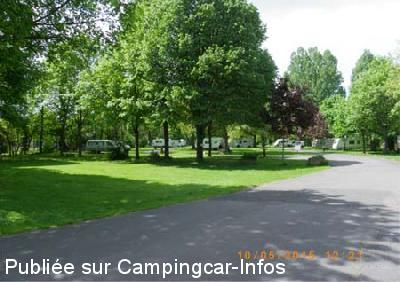
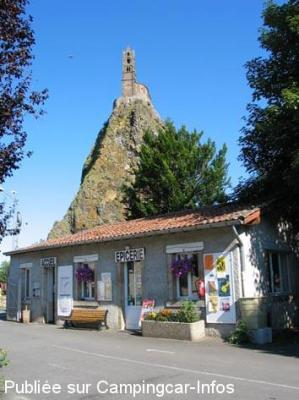
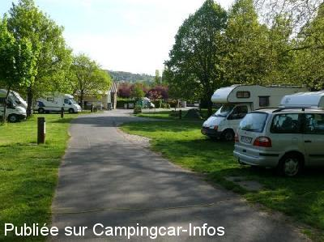
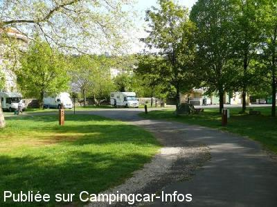

AC = Camping acceptant les camping-cars de :
LE PUY EN VELAY
(N° 350)
Accès/adresse :
Chemin de Bouthezard
Camping Bouthezard ***
43000 LE PUY EN VELAY
Camping Bouthezard ***
43000 LE PUY EN VELAY
Latitude : (Nord) 45.05048° Décimaux ou 45° 3′ 1′′
Longitude : (Est) 3.88116° Décimaux ou 3° 52′ 52′′
Tarif : 2016
Emplacement, 2 personnes : 11,60 €
Personne + 10 ans : 3,50 €
Enfant - 10 ans : 1,60 €
Électricité : 3,60 €
Animal : 1,50 €
Taxe de séjour + 18 ans : 0,20 €
Type de borne : Autre
Services :


Accès handicapés
Lave-linge
Sèche-linge
Jeux
Autres informations :
Ouvert du 25/03 au 30/10
72 emplacements ombragés
Tél : +33(0)471 095 509
camping.puyenvelay@orange.fr
http://www.aquadis-loisirs.com/camping-de-bouthezard/

Le 14/06/2015 par eastwood

Le 15/09/2012 par Sylvain

Le 11/05/2009 par

Le 11/05/2009 par
de
eastwood
le 14/06/2015 :
Bonjour, je recommande vivement le camping du Puy en Velay pour une visite de la ville à son rythme : sur place il y a deux blocs sanitaires, la WIFI et un accueil sympathique. Attention, le camping est ouvert le week end seulement l'AM le samedi et le dimanche à partir de 14 h 00. Au départ du camping, il y a un GR de 4 km pour aller visiter le chateau de Polignac, et la "voie verte" pour aller jusqu'à une ancienne abbaye (à Brives) qui longe le long de l'eau. A 10 mn à pied de la Haute Ville... et bien plus agréable que le parking d'Aiguilhe (en plein soleil) au pied de la chapelle St Michel....
Bonjour, je recommande vivement le camping du Puy en Velay pour une visite de la ville à son rythme : sur place il y a deux blocs sanitaires, la WIFI et un accueil sympathique. Attention, le camping est ouvert le week end seulement l'AM le samedi et le dimanche à partir de 14 h 00. Au départ du camping, il y a un GR de 4 km pour aller visiter le chateau de Polignac, et la "voie verte" pour aller jusqu'à une ancienne abbaye (à Brives) qui longe le long de l'eau. A 10 mn à pied de la Haute Ville... et bien plus agréable que le parking d'Aiguilhe (en plein soleil) au pied de la chapelle St Michel....
de
Bruno M
le 12/05/2015 :
Camping très sympa et très pratique pour visiter le Puy (à peine 10 min pour se rendre au centre ville à pied). Nous avons payé 10,12€ pour 1 CC, 2 personnes et un chien.
Camping très sympa et très pratique pour visiter le Puy (à peine 10 min pour se rendre au centre ville à pied). Nous avons payé 10,12€ pour 1 CC, 2 personnes et un chien.
de
Sylvain
le 06/09/2014 :
Encore moi Sylvain de Bruxelles nouveau en 2014 super terrasse avec cuisine du pays super Aligot. Petit truc pour la TV si la parabolique ne passe pas, il reste la tnt terrestre avec une simple antenne intérieur dans la plus part des campings que nous avons fait la réception est super, après réglage car dans chaque départements ils ont leurs fréquences A plus.
Encore moi Sylvain de Bruxelles nouveau en 2014 super terrasse avec cuisine du pays super Aligot. Petit truc pour la TV si la parabolique ne passe pas, il reste la tnt terrestre avec une simple antenne intérieur dans la plus part des campings que nous avons fait la réception est super, après réglage car dans chaque départements ils ont leurs fréquences A plus.
de
2miro
le 24/08/2014 :
Bonsoir, nous avons passé 2 nuits dans ce camping les 8 et 9 août, les gérants sont effectivement très sympas, mais par cet été pour le moins pluvieux les sols étaient gorgés d'eau et certains emplacements impraticables.
1 tuyau à coté des sanitaires pour faire le plein d'eau,une grille au sol pour la vidange devant l'entrée des sanitaires , de même pour les wc chimiques.
Beaucoup de camping-cars squattent plusieurs parkings le long du torrent ''la borne '' non loin du camping. Il n'y a aucun panneau qui interdise ou autorise !!! À vous de voir...
Bonsoir, nous avons passé 2 nuits dans ce camping les 8 et 9 août, les gérants sont effectivement très sympas, mais par cet été pour le moins pluvieux les sols étaient gorgés d'eau et certains emplacements impraticables.
1 tuyau à coté des sanitaires pour faire le plein d'eau,une grille au sol pour la vidange devant l'entrée des sanitaires , de même pour les wc chimiques.
Beaucoup de camping-cars squattent plusieurs parkings le long du torrent ''la borne '' non loin du camping. Il n'y a aucun panneau qui interdise ou autorise !!! À vous de voir...
de
chouky78
le 21/05/2014 :
Bonjour , Superbe camping prés de la statue rouge , calme verdoyant prés du centre ville accueil plus que parfais part contre très ombrage pour les CC avec parabole à part ça c'est le top merci beaucoup
Bonjour , Superbe camping prés de la statue rouge , calme verdoyant prés du centre ville accueil plus que parfais part contre très ombrage pour les CC avec parabole à part ça c'est le top merci beaucoup
de
Daniel21
le 25/09/2013 :
Camping agréable, bon accueil, pratique pour visiter la ville.
Camping agréable, bon accueil, pratique pour visiter la ville.
de
pierre
le 30/08/2013 :
Très pratique car à proximité du centre ville historique. Les gérants du camping sont très aimables,
camping très ombragé et calme.
Très pratique car à proximité du centre ville historique. Les gérants du camping sont très aimables,
camping très ombragé et calme.
de
Sylvain d B
le 15/09/2012 :
Salut les campings caristes, si vous voulez un accueil super, une politesse, la gentillesse d'un patron de camping aux petits soins pour ses clients c''est ici qu'il faut venir. Août 2012 premier passage sur la route vers l''Ardèche, au retour nous avons choisi de changer notre itinéraire vers la Belgique rien que pour repasser par ici. Superbe situation des lieux, ville proche du camping et des prix sans concurrence. Vivement l''année prochaine. À ne pas rater les pizzas au camp.
Salut les campings caristes, si vous voulez un accueil super, une politesse, la gentillesse d'un patron de camping aux petits soins pour ses clients c''est ici qu'il faut venir. Août 2012 premier passage sur la route vers l''Ardèche, au retour nous avons choisi de changer notre itinéraire vers la Belgique rien que pour repasser par ici. Superbe situation des lieux, ville proche du camping et des prix sans concurrence. Vivement l''année prochaine. À ne pas rater les pizzas au camp.
de
jcf68500
le 09/09/2012 :
Nous avons passé 2 nuits sur ce camping, accueil très sympas, bons services, beaucoup d'ombrage, de très beaux arbres, à 5 mn de la ville, par contre le terrain est très humide, l'eau affleure même sur certaines parcelles, d'autant que nous avons essuyé de très grosses averses. A conseiller vivement.
Nous avons passé 2 nuits sur ce camping, accueil très sympas, bons services, beaucoup d'ombrage, de très beaux arbres, à 5 mn de la ville, par contre le terrain est très humide, l'eau affleure même sur certaines parcelles, d'autant que nous avons essuyé de très grosses averses. A conseiller vivement.
de
gerardfem
le 22/08/2012 :
Après avoir passé 2 nuits au camping je confirme le commentaire précédent. Nombreuses places à l'ombre malgré la canicule, gérant très sympathique. Pour le wifi c'est 0.5€ pour 1 jour, 1€ pour 3 jours (la ruine, je plaisante surtout situé au centre du camping je captais très bien depuis le c/c). À recommander pour visiter la ville.
Après avoir passé 2 nuits au camping je confirme le commentaire précédent. Nombreuses places à l'ombre malgré la canicule, gérant très sympathique. Pour le wifi c'est 0.5€ pour 1 jour, 1€ pour 3 jours (la ruine, je plaisante surtout situé au centre du camping je captais très bien depuis le c/c). À recommander pour visiter la ville.
de
Claudine et Eric
le 27/11/2011 :
bien situé pour visiter une ville riche en monuments ,accueil très sympa et prix abordable merci
bien situé pour visiter une ville riche en monuments ,accueil très sympa et prix abordable merci
de
clar86100
le 13/08/2010 :
Camping super bien situé pour visiter l'une des plus belles villes de France... et super accueil!
Camping super bien situé pour visiter l'une des plus belles villes de France... et super accueil!